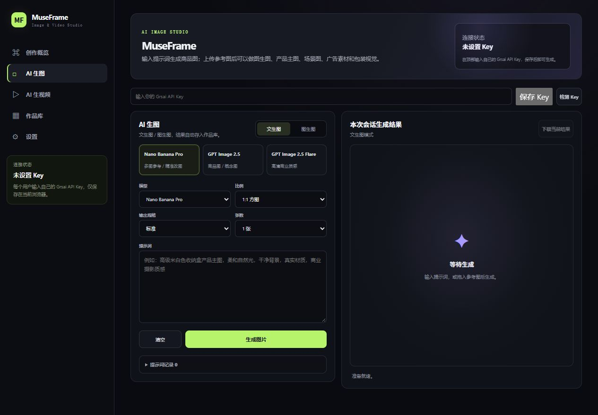

围绕实际制作组织功能
将图片、视频与参考图输入放在同一套界面中，让创作任务有明确入口。
02 / BUILT BY ME · CREATIVE TOOLS
从内容制作到业务知识，
把实际需求转化为可使用的工具。
选择项目，查看真实功能界面。
IMAGE & VIDEO STUDIO

WHAT THIS PROJECT SHOWS
将图片、视频与参考图输入放在同一套界面中，让创作任务有明确入口。
模型、比例、清晰度与时长通过界面选择，适配不同的素材规格。
作品库提供类型、来源筛选和批量下载入口，衔接后续整理与交付。
展示为本地界面截图。点击“打开真实工具”进入项目；截图切换不会提交生成任务。